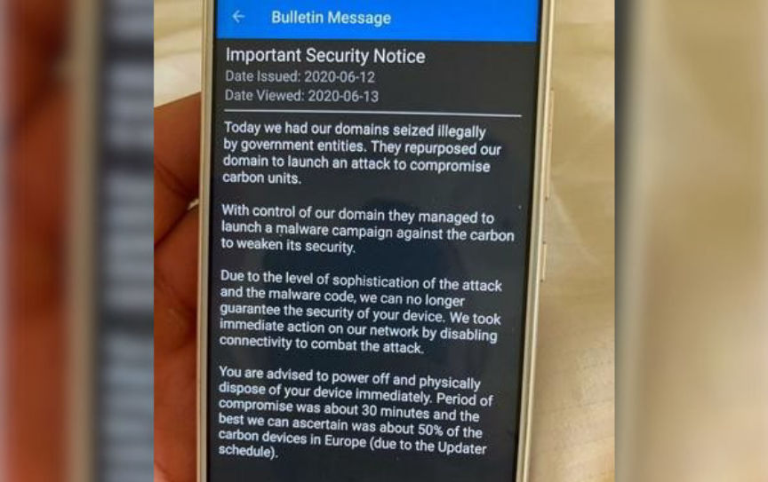
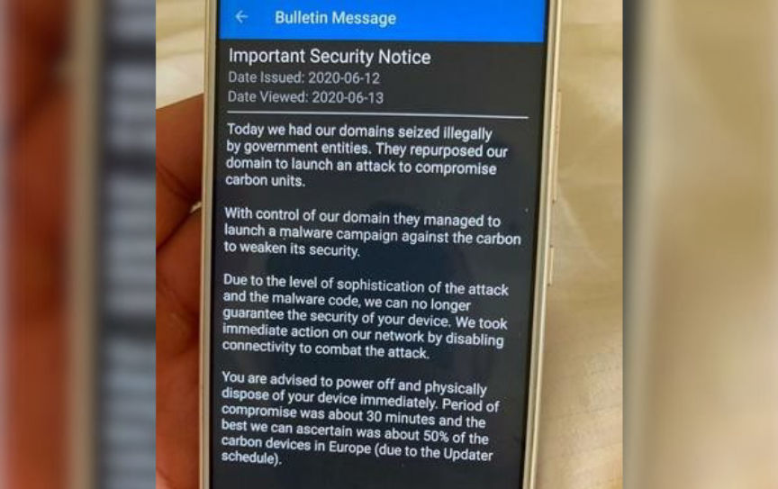

Hacked EncroChat Messages Used in MDMA Vendor Bust
~3 min read | Published on 2021-04-07, tagged DarkWeb, Darkweb-Vendor, Drug-Bust, EncroChat using 569 words.
Police in the UK raided properties associated with a group accused of selling MDMA on the darkweb. EncroChat was involved.
The National Crime Agency, supported by the US Homeland Security Investigations, North East Special Operations Unit (NERSOU), Northumbria Police, and Surrey Police, identified the suspects during an analysis of EncroChat messages.
EncroChat called itself “an end-to-end security solution” that provided customized Android handsets as well as an OTR messaging application. EncroChat usually sold Samsung phones with a modified version of Android. Some units had no functioning GPS, camera, or microphone. The phones came pre-installed with the EncroChat application as well as other applications provided by the company. EncroChat, the application, “routed conversations through a central server based in France.” The service had roughly 60,000 users at the time of its closure.

The French National Gendarmerie, assisted by law enforcement in the Netherlands, installed malware on EncroChat servers in France. “The malware allowed them to read messages before they were sent and record lock screen passwords,” according to a Wikipedia entry on the company. The malware affected more than half the devices in Europe, according to the company. Law enforcement agencies worldwide received access to the data pulled from the hacked EncroChat server.

During an analysis of EncroChat messages, the NCA identified two men, aged 24 and 31, as part of an MDMA trafficking and money laundering operation. According to the NCA, the men imported MDMA from the Netherlands and resold it on darkweb marketplaces under the usernames HundredsUK, Hundredsandthousands, Sundaefundae, and 100and1000s.

During the investigation, law enforcement in the UK seized 90 kilograms of MDMA, 134 kilograms of Amphetamine, and more than 6000 Diazepam/alprazolam tablets. Government-math values the combined total of the drugs at almost six million dollars.
After raids at addresses in South Shields and Hebburn, the NCA arrested both suspects on suspicion of importing and supplying Class A, B, and C drugs. Officers later searched an address in Epsom, London, and other addresses in South Sheilds. They seized mobile phones, computers, and drug packaging paraphernalia.
NCA Operations Manager Martin Clarke said:
“This action against an organized crime group supplying drugs via the dark web has dismantled a well-established operation. We have worked closely with partners in the US to target the individuals involved, who are ultimately preying on the vulnerable and destroying communities. This investigation shows that those who try to use the dark web and encrypted communication devices to anonymously commit crimes can be identified. There are two people from South Shields we are still seeking, who we believe are overseas. They know they are wanted, and I would encourage them to hand themselves in.”
US Homeland Security Investigations Attaché Eric Felman said:
“One of our top priorities as an agency is to disrupt and dismantle international narcotics smuggling activities at home and around the globe. The strong partnership between Homeland Security Investigations and the National Crime Agency continues to produce positive results in combatting organised international crime affecting both of our countries."
US Homeland Security Investigations appears to simply be investigating young adults in different countries for unidentified reasons. Notice how this is not a case where the agency investigated these two suspects to extradite them to the United States. This is just the United States being the global police.
The National Crime Agency, supported by the US Homeland Security Investigations, North East Special Operations Unit (NERSOU), Northumbria Police, and Surrey Police, identified the suspects during an analysis of EncroChat messages.
EncroChat called itself “an end-to-end security solution” that provided customized Android handsets as well as an OTR messaging application. EncroChat usually sold Samsung phones with a modified version of Android. Some units had no functioning GPS, camera, or microphone. The phones came pre-installed with the EncroChat application as well as other applications provided by the company. EncroChat, the application, “routed conversations through a central server based in France.” The service had roughly 60,000 users at the time of its closure.
The NCA and the US Homeland Security Investigation arrested two as part of the investigation.
The French National Gendarmerie, assisted by law enforcement in the Netherlands, installed malware on EncroChat servers in France. “The malware allowed them to read messages before they were sent and record lock screen passwords,” according to a Wikipedia entry on the company. The malware affected more than half the devices in Europe, according to the company. Law enforcement agencies worldwide received access to the data pulled from the hacked EncroChat server.
The EncroChat website advertised features but ignored the centralized weaknesses.
During an analysis of EncroChat messages, the NCA identified two men, aged 24 and 31, as part of an MDMA trafficking and money laundering operation. According to the NCA, the men imported MDMA from the Netherlands and resold it on darkweb marketplaces under the usernames HundredsUK, Hundredsandthousands, Sundaefundae, and 100and1000s.

A security bulletin sent by EncroChat after police deployed their malware on EncroChat servers.
During the investigation, law enforcement in the UK seized 90 kilograms of MDMA, 134 kilograms of Amphetamine, and more than 6000 Diazepam/alprazolam tablets. Government-math values the combined total of the drugs at almost six million dollars.
After raids at addresses in South Shields and Hebburn, the NCA arrested both suspects on suspicion of importing and supplying Class A, B, and C drugs. Officers later searched an address in Epsom, London, and other addresses in South Sheilds. They seized mobile phones, computers, and drug packaging paraphernalia.
NCA Operations Manager Martin Clarke said:
“This action against an organized crime group supplying drugs via the dark web has dismantled a well-established operation. We have worked closely with partners in the US to target the individuals involved, who are ultimately preying on the vulnerable and destroying communities. This investigation shows that those who try to use the dark web and encrypted communication devices to anonymously commit crimes can be identified. There are two people from South Shields we are still seeking, who we believe are overseas. They know they are wanted, and I would encourage them to hand themselves in.”
US Homeland Security Investigations Attaché Eric Felman said:
“One of our top priorities as an agency is to disrupt and dismantle international narcotics smuggling activities at home and around the globe. The strong partnership between Homeland Security Investigations and the National Crime Agency continues to produce positive results in combatting organised international crime affecting both of our countries."
US Homeland Security Investigations appears to simply be investigating young adults in different countries for unidentified reasons. Notice how this is not a case where the agency investigated these two suspects to extradite them to the United States. This is just the United States being the global police.